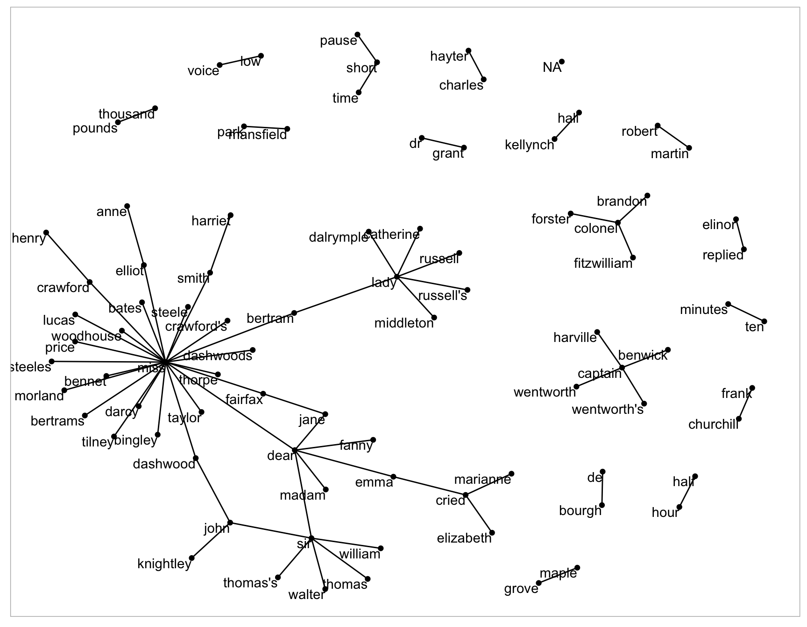

4.2 Tokeninzing by n-grams
n-gram: pair of adjacent words. Useful for identifying frequencies in which certain words appear together so that a model of their relationship can be built.
library(dplyr)
library(tidytext)
library(janeaustenr)
# utilize unnest_tokens() however specify the token is "ngram" and n instead of by words
austen_bigrams <- austen_books() %>%
unnest_tokens(bigram, text, token = "ngrams", n = 2)
head(austen_bigrams)## # A tibble: 6 × 2
## book bigram
## <fct> <chr>
## 1 Sense & Sensibility sense and
## 2 Sense & Sensibility and sensibility
## 3 Sense & Sensibility <NA>
## 4 Sense & Sensibility by jane
## 5 Sense & Sensibility jane austen
## 6 Sense & Sensibility <NA>OK, how about again with some real data:
# from Kaggle: https://www.kaggle.com/datatattle/covid-19-nlp-text-classification?select=Corona_NLP_train.csv
covid_tweets <- readr::read_csv("data/Corona_NLP_train.csv")## Rows: 41157 Columns: 6## ── Column specification ────────────────────────────────────────────────────────
## Delimiter: ","
## chr (4): Location, TweetAt, OriginalTweet, Sentiment
## dbl (2): UserName, ScreenName##
## ℹ Use `spec()` to retrieve the full column specification for this data.
## ℹ Specify the column types or set `show_col_types = FALSE` to quiet this message.covid_bigrams <- covid_tweets %>%
select(OriginalTweet, Sentiment) %>%
unnest_tokens(bigram, OriginalTweet, token = "ngrams", n = 2)
head(covid_bigrams)## # A tibble: 6 × 2
## Sentiment bigram
## <chr> <chr>
## 1 Neutral menyrbie phil_gahan
## 2 Neutral phil_gahan chrisitv
## 3 Neutral chrisitv https
## 4 Neutral https t.co
## 5 Neutral t.co ifz9fan2pa
## 6 Neutral ifz9fan2pa andThis output clearly needs to be filtered
## # A tibble: 474,761 × 2
## bigram n
## <chr> <int>
## 1 https t.co 23953
## 2 covid 19 11687
## 3 grocery store 4775
## 4 to the 3873
## 5 in the 3639
## 6 of the 3046
## 7 the coronavirus 2174
## 8 the grocery 2138
## 9 the supermarket 1890
## 10 coronavirus https 1825
## # … with 474,751 more rowsFilter stop-words. stop-words: uninteresting or common words such as “of”, “the”, “be”
In order to filter out stop words, we need to separate out the bigrams into separate columns using the separate() function from tidyr.
library(tidyr)
bigrams_separated <- covid_bigrams %>%
separate(bigram, c("word1", "word2"), sep = " ")
# n = 1,275,993 to n = 393,315
bigrams_filtered <- bigrams_separated %>%
filter(!word1 %in% stop_words$word) %>%
filter(!word2 %in% stop_words$word)
# new bigram counts:
bigram_counts <- bigrams_filtered %>%
count(word1, word2, sort = TRUE)
# n = 216,367Clearly there are a lot of people posting links on Twitter (t.co) because of the shortened URLs.
Now that we’ve filtered out the stopwords, let’s unite the words to create more true bigrams (no stopwords) again.
## # A tibble: 393,315 × 2
## Sentiment bigram
## <chr> <chr>
## 1 Neutral menyrbie phil_gahan
## 2 Neutral phil_gahan chrisitv
## 3 Neutral chrisitv https
## 4 Neutral https t.co
## 5 Neutral t.co ifz9fan2pa
## 6 Neutral https t.co
## 7 Neutral t.co xx6ghgfzcc
## 8 Neutral https t.co
## 9 Neutral t.co i2nlzdxno8
## 10 Positive advice talk
## # … with 393,305 more rowsIF we were interested in trigrams, we can repeat the sequence with n=3
covid_tweets %>%
select(OriginalTweet, Sentiment) %>%
unnest_tokens(trigram, OriginalTweet, token = "ngrams", n = 3) %>%
separate(trigram, c("word1", "word2", "word3"), sep = " ") %>%
filter(!word1 %in% stop_words$word,
!word2 %in% stop_words$word,
!word3 %in% stop_words$word) %>%
count(word1, word2, word3, sort = TRUE)## # A tibble: 187,821 × 4
## word1 word2 word3 n
## <chr> <chr> <chr> <int>
## 1 coronavirus https t.co 1822
## 2 covid 19 pandemic 917
## 3 covid19 https t.co 551
## 4 19 https t.co 512
## 5 covid 19 https 508
## 6 grocery store workers 432
## 7 covid 19 outbreak 386
## 8 covid 19 crisis 385
## 9 covid_19 https t.co 365
## 10 pandemic https t.co 363
## # … with 187,811 more rows4.2.1 Analyzing bigrams
This dataset does not really give us a grouping variable like the Austen data but they do include sentiment. Let’s try grouping by sentiments the curators have determined the tweets to be to get the which words are most associated with “shopping”.
## # A tibble: 571 × 3
## Sentiment word1 n
## <chr> <chr> <int>
## 1 Positive online 398
## 2 Neutral online 305
## 3 Negative online 298
## 4 Extremely Positive online 249
## 5 Positive grocery 121
## 6 Extremely Negative online 102
## 7 Neutral grocery 79
## 8 Negative grocery 56
## 9 Extremely Positive grocery 44
## 10 Negative panic 39
## # … with 561 more rowsBigrams can be used treated like documents. We can look at the tf-idf and visualize based on sentiment.
bigram_tf_idf <- bigrams_united %>%
count(Sentiment, bigram) %>%
bind_tf_idf(bigram, Sentiment, n) %>%
arrange(desc(tf_idf))
bigram_tf_idf## # A tibble: 252,318 × 6
## Sentiment bigram n tf idf tf_idf
## <chr> <chr> <int> <dbl> <dbl> <dbl>
## 1 Extremely Negative price war 57 0.00106 0.511 0.000539
## 2 Extremely Negative stop panic 110 0.00204 0.223 0.000455
## 3 Extremely Positive strong amp 17 0.000255 1.61 0.000411
## 4 Extremely Negative terroristic threats 13 0.000241 1.61 0.000387
## 5 Extremely Positive experiencing hardships 14 0.000210 1.61 0.000338
## 6 Extremely Negative walmart trader 19 0.000352 0.916 0.000322
## 7 Extremely Negative food shortages 34 0.000630 0.511 0.000322
## 8 Extremely Negative break eggs 10 0.000185 1.61 0.000298
## 9 Extremely Negative milk break 10 0.000185 1.61 0.000298
## 10 Extremely Positive friends safe 12 0.000180 1.61 0.000290
## # … with 252,308 more rowsVisualizing tf-idf
library(forcats)
library(ggplot2)
bigram_tf_idf %>%
group_by(Sentiment) %>%
slice_max(tf_idf, n = 15) %>%
ungroup() %>%
ggplot(aes(tf_idf, fct_reorder(bigram, tf_idf), fill = Sentiment)) +
geom_col(show.legend = FALSE) +
facet_wrap(~Sentiment, ncol = 2, scales = "free") +
labs(x = "tf-idf", y = NULL)Takeaway- bigrams are informative and can make tokens more understandable they do make the counts more sparse (a two-word pair is more rare). These can be useful in very large datasets
4.2.2 Using bigrams to provide context in sentiment analysis
This dataset already contains sentiment of the overall tweet but as we saw in the tf-idf visual, they don’t really make much sense in context of just the bigram. So, let’s re-do it. This could make a difference given the context, such as the usage of “not” before “happy”.
## # A tibble: 1,135 × 3
## word1 word2 n
## <chr> <chr> <int>
## 1 not to 220
## 2 not a 181
## 3 not be 177
## 4 not the 149
## 5 not only 111
## 6 not going 86
## 7 not just 86
## 8 not have 73
## 9 not panic 70
## 10 not sure 69
## # … with 1,125 more rowsAFINN will be used to assign a numeric value for each word associated with “not”.
Note: You need to run get_sentiments interactively (to approve the download) per licensing requirements, so we can’t show those results in this online version.
AFINN <- get_sentiments("afinn")
# get the most frequent words preceded by "not"
not_words <- bigrams_separated %>%
filter(word1 == "not") %>%
inner_join(AFINN, by = c(word2 = "word")) %>%
count(word2, value, sort = TRUE)
# n = 194
not_wordsThe most common sentiment-associated word following “not” is “panic”. Panic is pretty negative but NOT panic can be more positive.
Computing how influential the certain words were in understanding the context in the wrong direction. This is done in the book by multiplying the their frequency by their sentiment value.
not_words %>%
mutate(contribution = n * value) %>%
arrange(desc(abs(contribution))) %>%
head(20) %>%
mutate(word2 = reorder(word2, contribution)) %>%
ggplot(aes(n * value, word2, fill = n * value > 0)) +
geom_col(show.legend = FALSE) +
labs(x = "Sentiment value * number of occurrences",
y = "Words preceded by \"not\"")Panic looks very influential.
Let’s try again with more negation terms
negation_words <- c("not", "no", "never", "without")
negated_words <- bigrams_separated %>%
filter(word1 %in% negation_words) %>%
inner_join(AFINN, by = c(word2 = "word")) %>%
count(word1, word2, value, sort = TRUE)
# n=342
negated_words %>%
mutate(contribution = n * value) %>%
arrange(desc(abs(contribution))) %>%
head(20) %>%
mutate(word2 = reorder(word2, contribution)) %>%
ggplot(aes(n * value, word2, fill = n * value > 0)) +
geom_col(show.legend = FALSE) +
facet_wrap(~word1, ncol = 2, scales = "free") +
labs(x = "Sentiment value * number of occurrences",
y = "Words preceded by \"not\"")4.2.3 Visualizing network of bigrams with ggraph
Relationships between words can be visualized using a node graph. nodes: subject (where the edge is coming from), object (where the edge is going to), edge(association between nodes that have weight)
library(igraph)
# original counts
bigram_counts
# filter for only relatively common combinations
bigram_graph <- bigram_counts %>%
filter(n > 20) %>%
graph_from_data_frame()
bigram_graphNow that the igraph object has been created, we must plot it with ggraph!
set.seed(2017)
ggraph(bigram_graph, layout = "fr") +
geom_edge_link() +
geom_node_point() +
geom_node_text(aes(label = name), vjust = 1, hjust = 1)This is what it would look like:

set.seed(2020)
a <- grid::arrow(type = "closed", length = unit(.15, "inches"))
ggraph(bigram_graph, layout = "fr") +
geom_edge_link(aes(edge_alpha = n), show.legend = FALSE,
arrow = a, end_cap = circle(.07, 'inches')) +
geom_node_point(color = "lightblue", size = 5) +
geom_node_text(aes(label = name), vjust = 1, hjust = 1) +
theme_void()This is a visualization of a Markov Chain

Markov Chain: common model in text analysis. It is a stochastic model that describes a sequence of possible events where the probability of a subsequent event depends on the state of the previous event. In this case, words are assigned probabilities and then the likelihood of the next word depends on the prior word. For example, in a word generator, if the word is “restaurant”, there is a good chance the following word may be “reservation”.